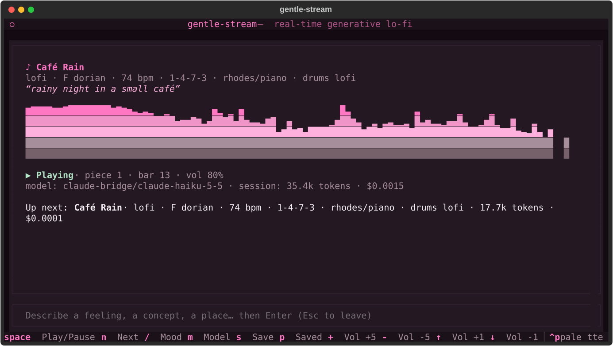

The Listening Room
Music for the way you feel.
Endless generative music in your terminal. Describe a scene, a feeling or a place. gentle-stream composes what comes next, bar by bar.

-
Start with a mood
Gentle Shell interprets your words with the model you choose.
-
Hear it take shape
gentle-stream composes and plays each bar. A new mood starts on the next one.
-
Keep what you like
Save a mood’s musical settings and bring that sound back with no model call.
Demo preview
From mood to music.
Describe a scene in the terminal and hear gentle-stream turn it into music, one bar at a time.
- 01 / Mood prompt
rainy night in a small café
- 02 / Generated piece
- Café RainLo-fi · F Dorian · 74 BPM
2:35 · Spanish captions · Instrumental, no voiceover
Watch the demo on GitHubOpen your terminal.
On macOS or Linux, you’ll need uv (which manages Python 3.13), Gentle Shell (gentle-shell on your PATH) with at least one signed-in model provider, and an audio output device. On Linux, install your distro’s PortAudio package, such as libportaudio2.
FluidSynth is optional and only needed for sampled instruments.
uv tool install 'gentle-stream[samples] @ git+https://github.com/Gentleman-Programming/gentle-stream'
gentle-stream